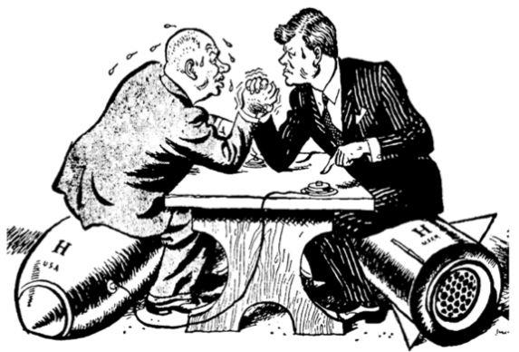
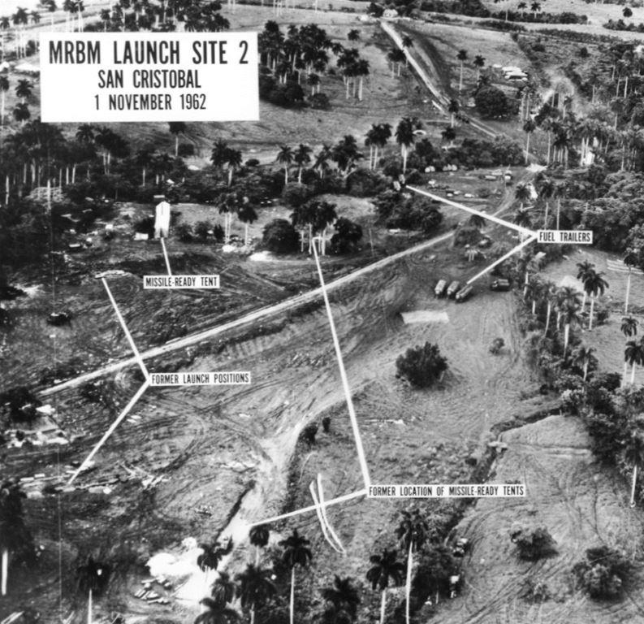
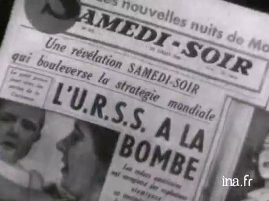
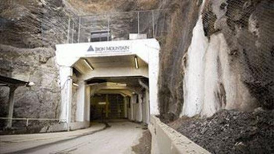
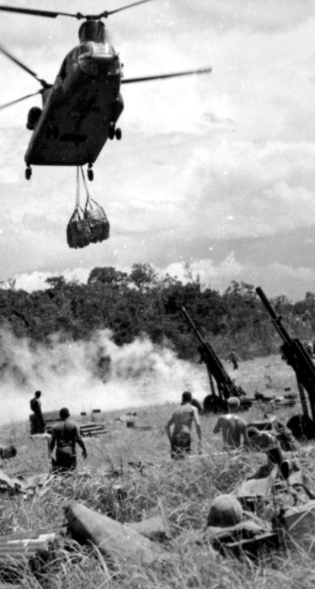
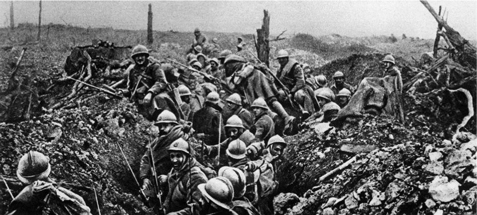
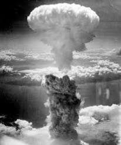

Le « Rapport de la Montagne de fer ». Première partie : À quoi servent les guerres ?
par Jean GOYCHMAN
Parmi les événements de l'après-guerre qui ont marqués les esprits et les mémoires, l'affaire des fusées de Cuba figure au premier plan. Pourtant, une de ses conséquences est restée ignorée du grand public et a cependant eu des répercussions très importantes, y compris sur notre vie actuelle.
Rappelons brièvement les faits : En mai 1962, alors que la « guerre froide » connaissait une période particulièrement glaciale en raison de la construction récente du « mur de Berlin », Nikita Khrouchtchev, 1er secrétaire de l'URSS décida de déclencher à Cuba l'opération « Anadyr » qui consistait à envoyer 50.000 hommes et des missiles SS4 et SS5, accompagnés de 4 sous-marins afin de prévenir tout débarquement américain éventuel.
L’Île de Cuba étant située à environ 200 km des côtes américaines, cette initiative ne pouvait être ignorée des services de renseignements américains, qui s'y attachèrent à la surveiller comme « le lait sur le feu »
Des vols de reconnaissance à haute altitude effectués par des avions espions américains montrèrent les sites de lancement des missiles en cours de construction dès le 14 octobre. Entretemps, 4 sous-marins soviétiques de classe « Foxtrot », à propulsion classique, avaient appareillé pour rejoindre un convoi d'autres navires voguant vers Cuba. JF Kennedy donna alors l'ordre à une force navale américaine de l'Atlantique de les intercepter.
C'est le 27 octobre que tout aurait pu basculer. Le sous-marin soviétique B 59 est traqué depuis deux jours par des destroyers américains. Il n'a donc pu remonter à la surface et la tension à bord est à son comble. Les hommes d'équipage commencent à manquer d'oxygène et le commandant Savitsky ne peut échanger avec son PC. Tout à coup, 5 explosions secouent le sous-marin et le commandant est persuadé que les navires américains veulent le couler1. Fait ignoré des renseignements américains, il possède une torpille équipée d'une charge nucléaire de 10 kt. Il donne l'ordre de préparer son lancement afin de riposter. Bien qu'effroyable, cette décision est cependant conforme à la doctrine d'emploi de ces armes telle que transmise au commandant avant son départ. Sans l'intervention du commandant en second, nommé Vassili Arkipov, doté d'une forte personnalité, et qui n'aurait même pas dû se trouver à bord, ayant dû remplacer le second prévu au dernier moment.
Arkipov sut cependant trouver les arguments justes et réussit à éviter que la planète ne bascule dans le plus épouvantable des conflits. Combien de vies furent alors sauvées grâce à Vassili Arkipov, décédé en 1998 dans l'indifférence quasi-générale ?
Or, ces événements auront des suites imprévues. Conscients d'être passé à un cheveu du cataclysme, Khrouchtchev et Kennedy en tirèrent des conclusions et tombèrent d'accord sur la nécessité d'aller vers un désarmement. Pendant que celui-ci se mettait en place, un groupe de personnes non clairement identifiées à ce jour, mais agissant depuis la Maison Blanche2, commença à s'interroger sur les conséquences d'un état de paix quasi-éternel qui risquait de mettre à mal les intérêts financiers de ce que Eisenhower avait appelé « le complexe militaro-industriel » dans son dernier discours en tant que Président, en janvier 1961. Ce groupe appartenait probablement à ce que Peter Dale Scott3 désigne sous le nom « d’État profond américain » On peut penser que le but ultime était d'installer un gouvernement mondial à la surface de la planète, et le fait de ne pas pouvoir l'imposer par la menace et la peur d'une guerre nucléaire risquait de compliquer sérieusement les choses.
Les tentatives de conquérir le monde afin d'y installer un empire unique ne datent pas d'hier et le 19ème siècle avait vu l'empire britannique sur le point d'y réussir. Celui qui est le plus fort et le mieux armé a, en théorie, toutes les chances d'y parvenir. En théorie seulement car nombreux sont ceux qui comptent bien pouvoir s'y opposer et jusqu'à la fin de la seconde guerre mondiale, les tentatives avaient toutes échoué. L'arme atomique aurait pu changer la donne, à condition qu'elle reste l'apanage d'une seule puissance.
Or, en 1949, l'URSS avait réussi à faire exploser sa première bombe nucléaire, remettant en cause ce leadership. Il s'établit ensuite progressivement un nouvel équilibre de la terreur qui ne pouvait qu'aboutir à la destruction d'une bonne partie de la planète ou la mise en place d'un désarmement équilibré et programmé. L’« État profond américain » eu rapidement conscience que l’ère de paix qui s'ouvrait risquait d'être très néfaste à ses projets.
Cependant, hormis quelques actions4, nécessaires à ses yeux, pour établir leur capacité à dominer le monde, son action s'exerçait beaucoup plus dans le domaine psychologique, et notamment celui de la « communication ».
Le problème qui était posé pouvait se résumer à : « Comment faire pour maintenir le bénéfice lié aux craintes d'une guerre sans qu'il y ait réellement une guerre ? » Une première analyse s'imposait qui consistait à d’identifier les effets de la guerre sur un plan social, économique et politique.
Un groupe de personnes, destinées à rester totalement anonymes, furent alors sollicitées par un correspondant, visiblement interne à la Maison Blanche, en vue de se réunir d'une manière régulière pour établir un rapport en commun sur ce sujet. Le lieu de ces réunions fut fixé dans un gigantesque abri anti-atomique, une colline près de la ville de Hudson, à une soixantaine de kilomètres au nord-ouest de New-York, dans laquelle de nombreuses galeries et tunnels avaient été creusés, probablement dans le cadre du « projet du jugement dernier5 ».
On connaît relativement peu de choses sur les participants et les fréquences de ces réunions. On sait simplement qu'elles se sont tenues de 1963 à 1967, date à laquelle ce rapport fut remis à ses commanditaires. Néanmoins, bien qu'il eût dû rester secret, un des participants a tenu à le publier sous le pseudonyme de « John Doe », équivalent de « Monsieur Dupont » en français. D'après une conférence de Claude Timmerman6, le titre était « Report from the Iron Mountain on the possibility and the desirability of peace ». Cette parution provoqua un certain émoi à la Maison Blanche (nous étions en pleine guerre du Viet Nam) et la réalité de ce rapport fut catégoriquement démentie. Cependant, un article de John Kenneth Galbraith, dans lequel il affirmait que ce rapport avait une réalité, et que, s'il n'avait pu lui-même y participer, il avait cependant été pressenti. Cet article a été reproduit en tant que préface de l'édition française, traduite de l'anglais par Jean Bloch-Michel, parue en 1968 et rééditée en 1984. Dans cet article, Galbraith écrivait d'une façon très explicite :
« De même que je prends personnellement la responsabilité de l’authenticité de ce document, je puis témoigner en faveur de la justesse de ses conclusions. Mes réserves ne concernent que l’imprudence avec laquelle il a été mis à la disposition d’un public qui n’était évidemment pas prêt à le comprendre. »
Que dit en substance ce rapport ?
Sous le titre français7 « La paix indésirable ?», on trouve le sous-titre « Rapport sur l'utilité des guerres ». Dans les critères retenus pour l'ensemble de cette étude, l'aspect purement moral des choses ne semble pas avoir été retenu. L'objectivité est de style « militaire », aucune hypothèse ou idée qui pouvait s'apparenter à une sorte de préjugé ne devait être retenue. Enfin, une prise en compte dans tous les domaines, sans aucune exclusion, des théories, des événements ou des faits ayant une relation avec le domaine étudié.
DÉSARMEMENT ET ÉCONOMIE
Le premier chapitre concerne le désarmement et l'économie. Un inventaire est fait afin d'estimer la part de l'industrie de l'armement dans l'économie mondiale. L'estimation qui résulte des échanges de données entre les intervenants ainsi que leurs connaissances spécifiques est de l'ordre de 10 %, ce qui en fait un des secteurs les plus importants. Tout au long de ce chapitre, les possibilités de reconversion de ce domaine industriel sont envisagées sans que se dégage une solution adéquate.
Le rapport fait état de 5 points d'achoppement :
1) Aucune proposition n'est en rapport avec l'ampleur « exceptionnelle des ajustements nécessaires »
2) Les propositions en matière de travaux publics « de bienfaisance » sont des vœux pieux.
3) Les mesures monétaires et fiscales ne suffiront pas à établir une économie « désarmée »
4) Rien ne dit que les mesures de reconversion seront politiquement acceptables
5) Les fonctions « non-militaires » de la guerre et de l'industrie de l'armement n'ont pas été étudiées. Aucun des substituts de ces fonctions n'a même été envisagé.
On perçoit très nettement que la suppression pure et simple de l'industrie de l'armement n'est pas envisageable. Il faudra trouver d'autres voies.
COMMENT DÉSARMER
Le chapitre suivant est consacré à l'étude de la mise en œuvre d'un désarmement « planétaire ».
Tous les scenarii proposés sont basés sur des accords bilatéraux ou multilatéraux. Outre la lenteur du procédé, celui-ci va exiger des moyens de contrôle avec des procédures compliquées ayant peu de chances d'aboutir. Elles concerneraient progressivement la destruction des armements lourds puis de leurs moyens de production.
Néanmoins, ce processus de désarmement n'est pas à écarter d'emblée et peut réussir, à la condition qu'un plan rigoureux de reconversion progressive soit élaboré et adapté pas à pas aux différentes phases. Il convient cependant d'estimer les conséquences que pourraient avoir une transition vers la paix en analysant les fonctions remplies par la guerre.
LES FONCTIONS APPARENTES DE LA GUERRE
Le rapport envisage la prise en compte des phénomènes sociaux liés à l'état de guerre ou à celui de paix. La première constatation des auteurs porte sur un malentendu qui a généralisé une erreur fondamentale. Elle consiste à affirmer « de façon inexacte, que la guerre, en tant qu'institution, est subordonnée au régime social qu'elle est censée défendre »
C'est de là qu'est née cette idée que la guerre ne pouvait qu'être le prolongement de la diplomatie. Si cela était, nombre de problèmes se résoudraient facilement, avec des procédures adaptées pour passer de l'état de guerre à celui de paix. Notons qu'aucune définition ne définit l'état de paix intrinsèquement. La plus courante étant celle qui décrit la paix comme un intervalle entre deux guerres. La guerre est donc, qu'on l'accepte ou non, le système social de base. Selon que les « modes secondaires sociaux » soient en accord entre eux ou non, on passera d'un état à l'autre. Ce point semble fondamental. Jusqu'à présent, cet état naturel de guerre s'est imposé à toute l'humanité.
L'ensemble des systèmes économiques, politiques et législatifs sont au service de la guerre et non l'inverse. La guerre en tant qu'instrument au service d'une politique semble être un mythe. Cela implique une méconnaissance totale des fonctions de la guerre.
Généralement, on considère que ces fonctions apparentes sont les suivantes :
Défendre la nation contre l'attaque d'une autre nation, ou bien la dissuader d'attaquer
Défendre ou imposer un « intérêt national » (politique, économique ou idéologique)
Maintenir ou augmenter un potentiel militaire pour sa propre sécurité.
Or, il en existe d'autres, souvent ignorées parce que non visibles, et qui font l'objet du chapitre suivant.
LES FONCTIONS OCCULTES DE LA GUERRE
Les auteurs du rapport ont passé en revue les fonctions non-militaires de la guerre. Elles sont de différentes natures :
La fonction Économie : Les engins de destruction « massive » peuvent être considérés comme une sorte de gaspillage financier. En réalité, depuis les temps où Samuel critiquait David, nombreuses sont les voix qui se sont élevées contre les gaspillages militaires. Elles ont surtout servi à dissimuler le fait que certains gaspillages ont une grande utilité sociale. L'industrie de l'armement est pratiquement la seule qui soit entièrement soumise au contrôle total de l'autorité centrale.
Elle agit comme une sorte de régulateur pour l'économie du pays. Le fait que la guerre soit un gaspillage lui permet de remplir ses propres fonctions. Cet effet « régulateur » a notamment permis la sortie de la crise de 1929 par la guerre de 39-45, en agissant comme une sorte de balancier économique. En outre, cela permet une augmentation du PIB. Cela se vérifie dans une certaine mesure dans les mouvements boursiers traditionnellement en hausse en cas de menace de guerre.
La fonction politique : Elle est très importante dans le domaine de la stabilité sociale. La politique étrangère d'une nation par rapport aux autres relèves du « rapport de forces ». Pour être crédible dans sa politique étrangère, une nation doit pouvoir se doter des moyens nécessaires. Le rapport précise également « qu'il est prouvé dans l'histoire que l'existence de n'importe quelle forme d'armement rend certaine son utilisation » Sur le plan intérieur, l'autorité fondamentale que les gouvernants exercent sur leurs administrés provient de sa puissance militaire. Les peuples sont d'autant moins enclins à changer de gouvernement que la menace de guerre se précise. Certains pays ne font guère de distinction entre l'armée (chargée de la défense extérieure) et la police (défense intérieure) Le pouvoir d'un gouvernement à engager des actions militaires, qui existe jusque dans les États les plus libéraux, définit la réalité du lien entre celui-ci et le peuple.
La fonction sociologie : La cohésion d'un peuple dépend pour beaucoup de la présence et de l’action des éléments anti-sociaux qu'il renferme. En état de guerre, la sécurité de l'ensemble peut -être menacée et se pose alors la question de l'arbitrage entre moins de liberté pour plus de sécurité. Les gens, et nous l'avons vu récemment en France et surtout aux États Unis, sont prêts à admettre des « états d'urgence » dans un premier temps qui peuvent même ensuite se pérenniser par la loi. La peur devient alors le meilleur allié de l'autorité et de la stabilité des gouvernants. Par ailleurs, l'enrôlement militaire a toujours été un moyen efficace pour utiliser les « antisociaux » d'une façon acceptable et utiliser les « inemployables » en leur fournissant un cadre qui leur permettait de subsister. La conscription permet également d'obtenir une sorte de « carte de la population » qui permet de repérer les éventuels futurs semeurs de troubles, et la menace de guerre est un des arguments mis en avant pour la justifier.
La fonction écologie : C'est une des fonctions qu'il est souvent difficile d'aborder d'une façon rationnelle sans passer pour un cynique sanguinaire. Pourtant, elle correspond à une dure réalité. En période de famine prolongée, que l'homme post-néolithique ne peut maîtriser, la guerre est le moyen le plus courant pour éliminer les individus « en surnombre ». L'espèce humaine, en ce sens ne diffère guère des autres espèces animales...De ce point de vue, la guerre s'apparente cependant à une sorte « d'eugénisme à l'envers » Dans les espèces animales, ce sont les éléments les plus faibles qui disparaissent en premier. La guerre, elle, expose les spécimens les plus résistants de l'humanité et les plus aptes également à se reproduire. Les saignées dans les rangs se feront sentir, au niveau de la population, durant plusieurs générations.
Mais les guerres modernes ont ajouté une « efficacité » nouvelle (de ce strict point de vue de l'élimination des populations) en faisant de nombreuses victimes parmi les populations civiles, en raison des moyens de destruction employés (bombardement, agents défoliants, etc.).
Cependant, les progrès technologiques ont permis d'augmenter la production des aliments, faisant reculer les périodes de « disette ». Cela diminue d'autant l'importance de cette fonction écologique liée à la guerre. Toutefois, précisent les auteurs du rapport : « les taux actuels de de la croissance de la population auxquels il faut ajouter la menace de la contamination pourrait faire naître de nouvelles disettes » Ces crises pourraient se révéler d'une « ampleur sans précédent » et les méthodes de guerres « conventionnelles » pourraient se révéler « inadéquates pour réduire la population consommatrice jusqu'à un niveau en rapport avec les nécessités de la survie de l'espèce »
Enfin, les armes actuelles de destruction de masse, et notamment l'arme nucléaire, permettent de diminuer « les effets régressifs de la guerre sur la sélection naturelle » en n'éliminant plus seulement les « guerriers », mais également tous les autres individus. Le rapport pose néanmoins la question du « bénéfice génétique » en raison des éventuelles conséquences des mutations génétiques « malheureuses » sans pouvoir y répondre. Pour terminer l'étude de la fonction écologie, il faut constater que les progrès de la médecine diminuent le risque de mort prématurée tout en augmentant l'espérance de vie. « Il semble clair qu'une nouvelle fonction quasi-eugénique de la guerre est en train de se développer, dont il faudra tenir compte dans tout plan de transition vers la paix ».
La fonction culture et sciences : C'est une fonction d'importance considérable. Pratiquement toutes les formes de cultures font référence ou même reposent sur la guerre. Depuis les « danses de guerre » des peuples primitifs. La littérature, la musique, la peinture, l'architecture et la sculpture sont souvent l'expression de cette position centrale qu'a la guerre dans notre société. La guerre, qu'elle soit sous la forme d'un conflit national ou international, voire même d'une guerre de religion, fournit le thème le plus répandu de l'expression et de la création artistique, y compris celle du cinéma. La relation qui existe entre la guerre, la recherche et la découverte scientifique est très explicite. Même si la société actuelle accorde beaucoup d'importance à la science « pure », il est difficilement contestable que toutes les découvertes d'importance majeures dans les sciences naturelles ont trouvé leur inspiration dans les nécessités de leur époque, et qu'elles ont toujours été stimulées par la guerre. Pratiquement toutes les grandes applications scientifiques civiles se sont développées à partir de projets militaires. Le radar, l'informatique, le spatial, pour ne citer qu'eux, sont des exemples modernes. Il en est de même dans le domaine médical et paramédical, ou beaucoup de progrès ont été effectués en chirurgie notamment mais également dans le domaine de la prévention. Il est pratiquement impossible d'évaluer ce que serait la médecine actuelle sans ces apports dus à la guerre, ni de se projeter dans l'avenir en cas de retour à la paix.
Fonctions secondaires diverses : Le rapport a décidé de ne pas aborder certaines fonctions non-militaires de la guerre, au titre qu'elles n'influenceraient pas d'une manière importante la transition vers la paix. Elles ont cependant un rôle manifeste.
En premier, il y a le « facteur de libération social » lié à la guerre. C'est un aspect purement psychologique, au même titre que les célébrations, les commémorations et toutes les autres manifestations destinées à « rompre la monotonie » du temps par des jours de « rupture »
La guerre est également un facteur de stabilisation entre générations. Nos anciens se sont battus pour nous, ce qui donne aux plus âgés une sorte de pouvoir sur les plus jeunes.
La guerre est également un « clarificateur d'idéologies ». C'est une constante de l'esprit humain que de n'envisager qu'une logique de valeur « deux ». Une proposition est soit vraie, soit fausse. De même, il ne peut y avoir que deux partis s'opposant dans un même combat. (Essayez d'imaginer un match de foot avec trois équipes sur le terrain)
Enfin, la guerre est le fondement nécessaire à la compréhension internationale. Cette fonction est probablement en train de tomber en désuétude, en raison du développement des modes de communications, mais il n'empêche que ce sont surtout les guerres, encore aujourd'hui, qui ont permis aux différentes cultures de s'enrichir mutuellement par les réalisations des autres.
2 JF Kennedy y fera allusion dans son discours du 12 novembre 1963, 10 jours avant sa mort https://blogs.mediapart.fr/mbdl/blog/161011/le-discours-de-jfk-10-jours-avant-sa-mort-1
3 Peter Dale Scott L'Etat profond américain Editions Demi-lune
4 L'emploi contesté de l'arme atomique à Hiroshima le 06 aout 1945 ainsi que sur Nagasaki le 09 font partie de ces opérations destinées à démontrer cette capacité.
5 Le projet du « jugement dernier » est né en 1949 après l'explosion de la 1ère bombe atomique soviétique afin d'assurer la continuité de la chaîne de commandement dans le cas d'une attaque sur Washington qui aurait anéanti à la fois le Capitole, la Maison Blanche et le Pentagone. http://www.wikistrike.com/article-le-projet-jugement-dernier-et-les-evenements-profonds-jfk-le-watergate-l-irangate-et-le-11-septembre-97211509.html
Partager cette page